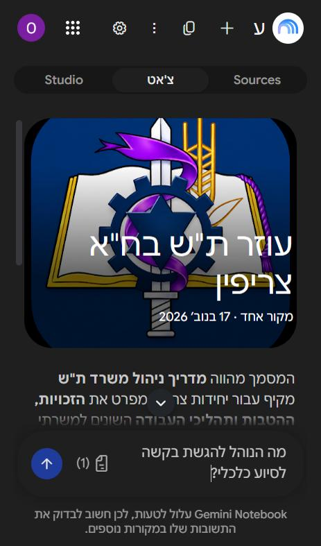
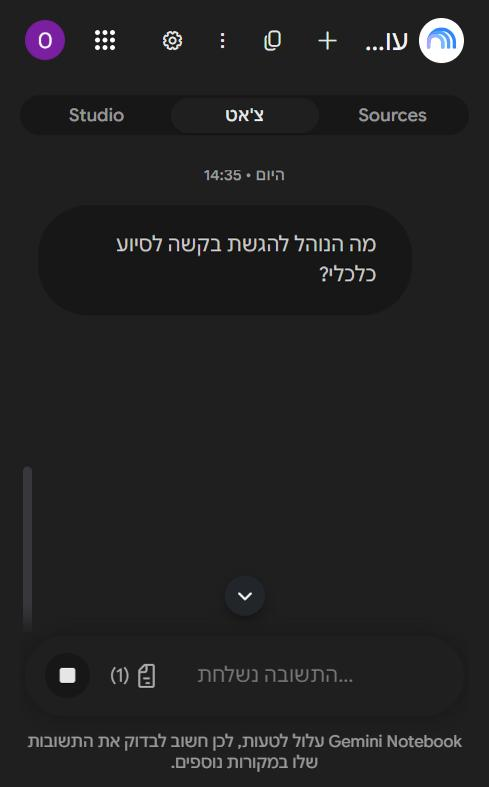
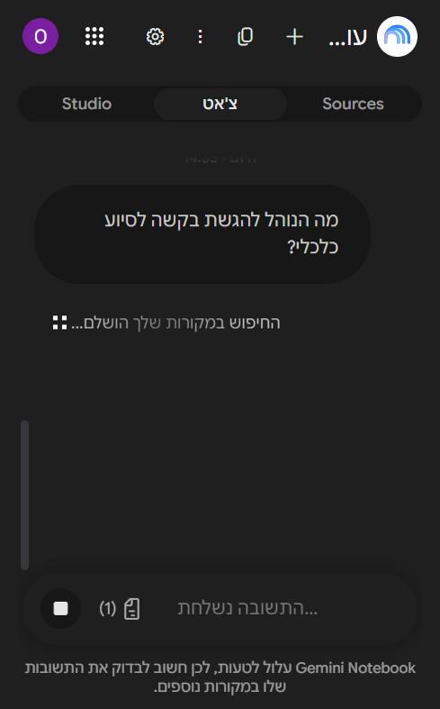
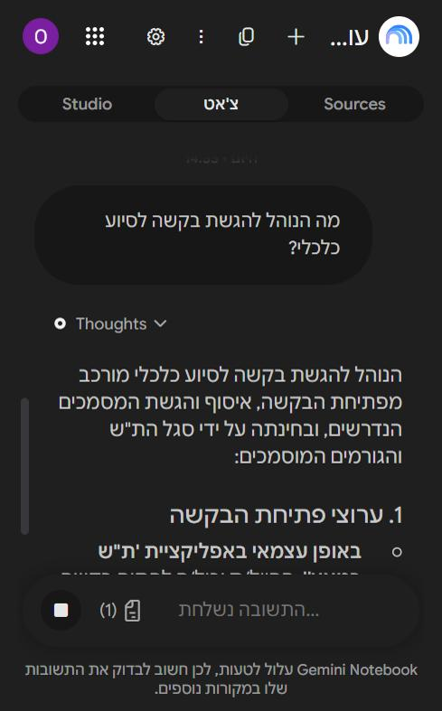
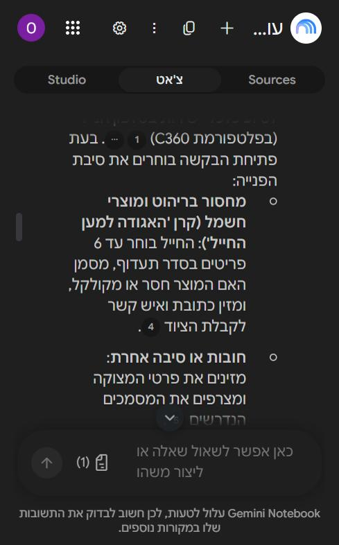

עוזר הת״ש
בח״א צריפין
שואלות שאלה על ת״ש.
מקבלות תשובה מתוך ספר ניהול הת״ש.
למש״קיות הת״ש בבח״א בלבד
מה זה
העוזר?
מבוסס על ספר ניהול הת״ש
רק מה שכתוב בספר, בלי ניחושים
מקור וציטוט
כל תשובה עם הקטע המקורי
תשובה מהירה
בלי לדפדף ב־200 עמודים
לשימוש מקצועי
עזר למש״קית, לא תחליף להחלטה
גישה מוגבלת
רק מי שקיבלה הרשאה
1
פותחות את הקישור
מההודעה
2
כותבות שאלה
ושולחות
3
מקבלות תשובה
עם מקור מהספר
מ
מפקדת הת״ש
הודעה
שלום לכולן! הנה העוזר החדש לשאלות על ת״ש
עוזר הת״ש בח״א צריפין
לחצו כדי לפתוח





כך זה נראה בפועל
כדי לקבל
תשובה טובה
שאלה מלאה וממוקדת
סוג הבקשה והמצב, במשפט ברור
בלי פרטים אישיים
לא כותבות שמות או מספרים של חיילים
בודקות את הציטוט
לא נמצא בספר? העוזר יגיד. הוא לא מנחש
זה עזר, לא החלטה
במקרה של ספק פונים לגורם המוסמך
מוכנות לנסות?
הקישור נמצא בהודעה
לפתיחת העוזר ←